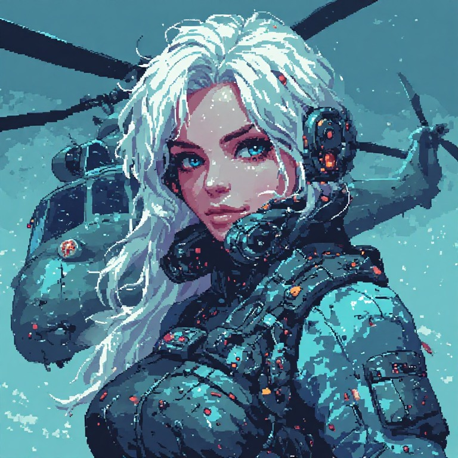

Aerial Roaming Intelligent Automaton
The flying member of the DREAM Robotics fleet.

ARIA is based on ESP-Drone, Espressif’s open-source ESP32 drone (GPL-3.0, its flight core from Crazyflie). Its firmware is in her repo under GPL-3.0. She has just started: her board isn’t built, and nothing has been compiled or flown yet. The plan is the same as the rest of the fleet: she joins RIFT’s network, answers /status, and talks to the others.